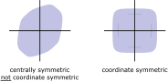
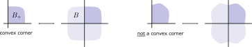
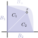
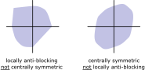

The Mahler conjecture asserts that among all centrally symmetric convex bodies \(B\) the cube minimizes the volume product \(\operatorname{vol}(B)\operatorname{vol}(B^\circ)\). While famously open, several proofs have been discovered for the special case of coordinate symmetric bodies. I want to share here a surprisingly short and elegant proof by Mathieu Meyer that seems otherwise unavailable in the English litrature. \(\DeclareMathOperator{\vol}{vol}\)
Let \(B\subset\Bbb R^n\) be a centrally symmetric convex body, where we shall assume \(-B=B\). Kurt Mahler defined the following linearly invariant notion of volume now known as Mahler volume:
\[ M(B):=\operatorname{vol}(B)\operatorname{vol}(B^\circ). \]
Here \(B^\circ:=\{y\in\Bbb R^n\mid \langle x,y\rangle\le 1\text{ for all }x\in B\}\) denotes the polar dual of \(B\). It has long been known that the Mahler volume attains a maximum for the sphere. There are also clear ideas for what should minimize the Mahler volume: the cube, and more generally, each of the Hanner polytopes. But a proof remains elusive. This is the infamous Mahler conjecture, which remains open to this day:
Mahler conjecture.
For each centrally symmetric convex body \(B\subset\Bbb R^n\) holds \[M(B)\ge M(\text{$n$-cube}) = \smash{\frac{4^n}{n!}}.\]
Below I share a very elegant and somewhat mysterious proof for the special case of coordinate symmetric bodies that, I believe, is not available in the English literature elsewhere. For some general background on the Mahler conjecture as well as its status, check out the Wikipedia article and Terry Tao’s blog entry on the topic.
Coordinate symmetric bodies and convex corners
A convex body \(B\subset\Bbb R^n\) is coordinate symmetric if it is invariant under reflection on each coordinate hyperplane \(H_i:=\{x_i=0\}\). A number of properties make coordinate symmetric bodies a natural special case for studying the Mahler conjecture: they are centrally symmetric, closed under polarity, and they contain all Hanner polytopes.

In the literature these bodies are often called “unconditional bodies”, a term going back to “unconditional convergence” motivated from Banach space theory. For geometric (that is, finite-dimensional) discussions I prefer to go with the more visually inspired term “coordinate symmetric”.
A coordinate symmetric body \(B\) is clearly determined by its restriction \(B_+:=B\cap\Bbb R^n_+\) to the positive orthant \(\Bbb R_+^n:=\{x_i\ge 0\}\). A set \(B_+\subset\Bbb R^n_+\) that can be written as such a restriction of a coordinate symmetric body is called a convex corner (also known as an anti-blocking body).

Convex corners are in one-to-one correspondence with coordinate symmetric bodies. We prove the Mahler conjecture for coordinate symmetric bodies by formulating and proving a version on convex corners. For this we require a notion of polar duality that works for convex corners. If \(B_+:= B\cap\Bbb R^n_+\) then
\[B_+^* := \{x\in\Bbb R^n_+\mid \langle x,y\rangle\le 1 \text{ for all } y\in B_+\} = B^\circ\cap\Bbb R^n_+.\]
Since a coordinate symmetric body consists of \(2^n\) identical copies of its convex corner and hence \(\vol(B)=2^n\vol(B_+)\), it is sufficient to prove the following:
Theorem.
For each convex corner \(B_+\subset\Bbb R^n_+\) holds \[M_+(B_+):=\operatorname{vol}(B_+)\operatorname{vol}(B_+^*) \ge \smash{\frac1{n!}}.\]
Proving the Mahler conjecture for convex corners
The following very short and elegant proof is due to Mathieu Meyer from his 1986 article Une caractérisation volumique de certains espaces normés. It was brought to my attention by Raman Sanyal, whose presentation of the proof I follow below.
Let \(B_i:=B_+\cap\{x_i=0\}\) and \(B_i^*:=B_+^*\cap \{x_i=0\}\), and observe that those are themselves convex corners of dimension \(n-1\). Define vectors \(v,v^*\in\Bbb R^n\) with components
\[v_i := \frac{\operatorname{vol}_{n-1}(B_i)}{n \operatorname{vol}_{n}(B_+)},\quad\; v_i^* := \frac{\operatorname{vol}_{n-1}(B_i^*)}{n \operatorname{vol}_{n}(B_+^*)}\]
(where from now on we put dimension subscripts on the volumes to avoid confusion). For a point \(x\in \Bbb R_+^n\) the inner product \(\langle x,v\rangle\) evaluates to
\[ \langle x,v\rangle = \sum_{i=1}^n x_i\frac{\operatorname{vol}_{n-1}(B_i)}{n \operatorname{vol}_n(B_+)} = \frac1{\operatorname{vol}_{n}(B_+)} \cdot \sum_{i=1}^n \underbrace{\tfrac1n{x_i \operatorname{vol}_{n-1}(B_i)}}_{\operatorname{vol}_n(C_i)}, \]
where \(C_i\) is the cone with base face \(B_i\) and apex at \(x\).

If \(x\in B_+\) then the cones \(C_i\) have disjoint interiors and are contained in \(B_+\). In particular, the sum of their volumes is bounded by \(\operatorname{vol}_n(B_+)\). Therefore \(\langle x,v\rangle \le 1\) for all \(x\in B_+\), and hence \(v\in B_+^*\). By an analogous argument holds \(v^*\in B_+\). Hence, we can conclude
\[ \begin{align} 1\,\ge\, &\langle v,v^*\rangle = \sum_{i=1}^n \frac{\operatorname{vol}_{n-1}(B_i)\operatorname{vol}_{n-1}(B_i^*)}{n^2\operatorname{vol}_n(B_+)\operatorname{vol}_n(B_+^*)} = \sum_{i=1}^n \frac{M_+(B_i)}{n^2M_+(B_+)}. \end{align} \]
By rearranging and applying the induction hypothesis \(M_+(B_i)\ge 1/(n-1)!\) we obtain
\[ M_+(B_+) \ge \frac1{n^2} \sum_{i=1}^n M_+(B_i) \ge \frac1{n^2} \cdot\frac{n}{(n-1)!} = \frac1{n!}. \]
From this proof one can also extract the minimizers. Those turn out to be precisely the Hanner corners (that is, the positive corners of Hanner polytopes). Consequently, the minimizers among the coordinate symmetric bodies are indeed the Hanner polytopes.
It’s not about central symmetry anymore
Coordinate symmetric bodies might seem a bit … restrictive. After all, they require quite some symmetry. However, as it turns out, once the problem is solved for convex corners, there is no longer any need to piece them together into a coordinate symmetric body to satisfy the Mahler conjecture. Even wilder, we don’t even need central symmetry anymore!
A locally anti-blocking body is a convex body that if restricted to each orthant yields a convex corner (this is the official term, I don’t yet have a good idea for a more visually descriptive name).

Locally anti-blocking bodies are a much richer family of bodie as compared to the highly symmetric coordinate symmetric bodies. In fact, they need not even be centrally symmetric! Still, they are closed under polar duality and share a number of nice properties with coordinate symmetric bodies.
The Mahler conjecture for locally anti-blocking bodies can be proven using the Cauchy-Schwarz inequality. For \(\sigma\in\{-1,+1\}^n\) write \(\Bbb R^n_\sigma:=\{x\in\Bbb R^n\mid \sigma_i x_i\ge 0\}\). For a locally anti-blocking body \(B\) define
\[ \begin{align} w_\sigma&:=\operatorname{vol}( B\cap \Bbb R^n_\sigma),\quad w_\sigma^*:=\operatorname{vol}( B^\circ\cap \Bbb R^n_\sigma) \end{align}, \]
which are precisely the volumes of its \(2^n\) convex corners. Using the Cauchy-Schwarz inequality (CS) and the proof for convex corners \((*)\), we conclude
\[ \begin{align} M(B) = \operatorname{vol}(B)\operatorname{vol}(B^\circ) &=\Big(\sum_\sigma w_\sigma\Big)\Big(\sum_\sigma w_\sigma^*\Big) \\&\!\overset{\text{(CS)}}\ge \Big(\sum_\sigma \sqrt{w_\sigma w_\sigma^*}\Big)^2 \overset{(*)}\ge \Big(\frac{2^n}{\sqrt{n!}}\Big)^2 = \frac{4^n}{n!}. \end{align} \]